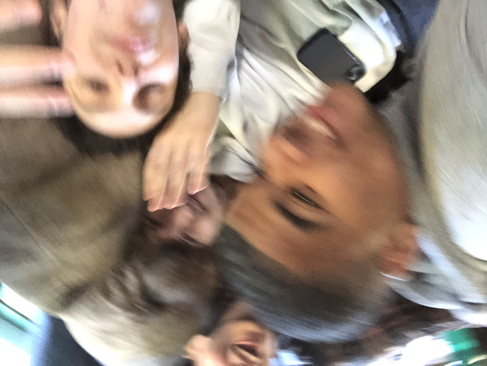
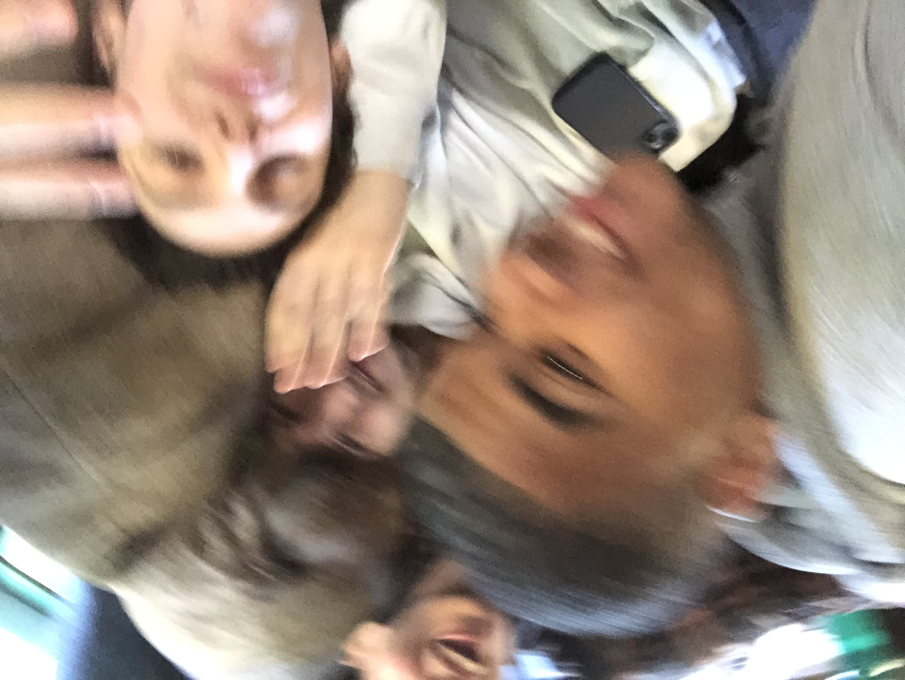

Bio
about me
Hi, I'm Nathan Lodge, I'm 18 and a 3rd term Software Engineering student at NEIT. I was born & raised in Windsor, CT.
Education
the schools i've attended.
-
Sage Park Middle School
The first school attended that I have pictured (bottom) is SPMS, a middle school that is located in Windsor, CT.
-
Windsor High School
After middle school, I attended Windsor High School for four years and graduated in 2023. At WHS I took AP Computer Science and AP Computer Science Principles.
-
New England Institute of Technology
Currently, I am attending NEIT and am in my second term. I am majoring in Software Engineering and am expected to graduate in 2026.
Hobbies
my hobbies/interests include:
-
coding
-
spending quality time with friends
-
playing video games
 
